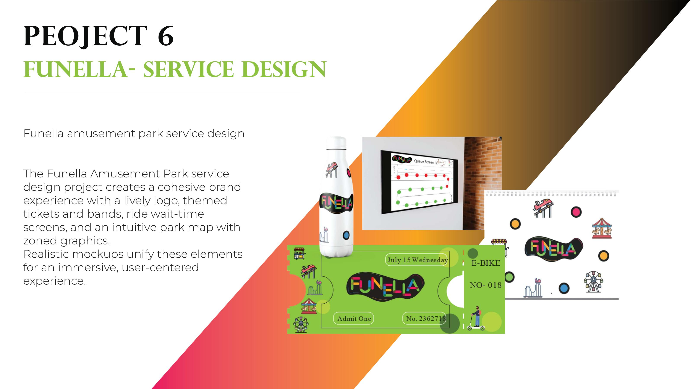
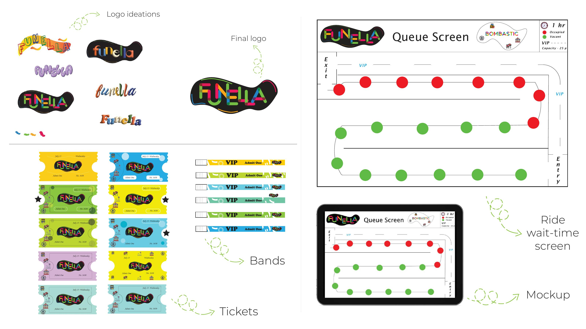
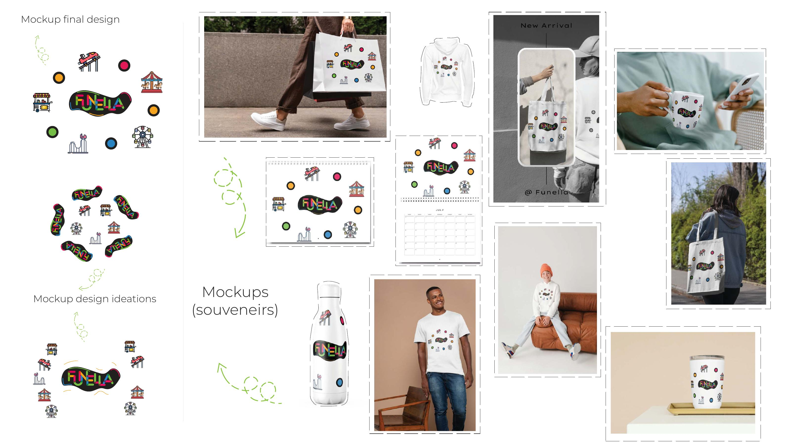
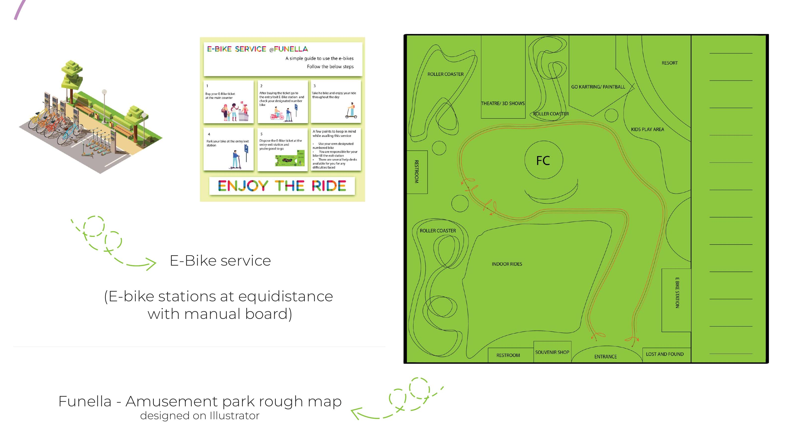

Creative Project / Service Design & Visual Identity
Funella
An amusement park service design concept — a cohesive brand experience from logo to queue screen, tickets, bands and physical mockups.

Overview
A unified park experience
The Funella Amusement Park service design project creates a cohesive brand experience across all visitor touchpoints. From the logo and admission tickets to ride wait-time screens and physical merchandise, every element works together to create an immersive, user-centred park experience.
Realistic mockups unify the design system across digital and physical surfaces — showing how the brand comes to life in context.
Scope
Touchpoints designed
Identity & Touchpoints
Logo, tickets & queue screen
The Funella identity is built around a bold, playful logo designed to work across both digital screens and printed materials. The queue/wait-time screen brings the brand into the park environment. Themed tickets and visitor bands extend the identity to every physical touchpoint a visitor interacts with.

Logo exploration, queue screen, tickets and bands
Mockups
Brand in context
High-fidelity mockups demonstrate the Funella identity applied to physical merchandise and environmental surfaces. The final compositions unify all designed elements into a coherent brand presentation for the service design showcase.

Service design mockups — physical surfaces and merchandise

Final service design presentation
Creative / academic project. A park map is referenced in the source overview but not present in the extracted pages. Include it only if you have the original asset. All other visible touchpoints are represented above.
Back to
All Work